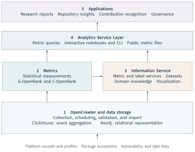
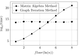
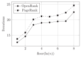
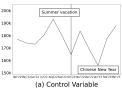
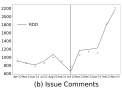
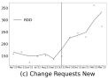
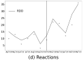
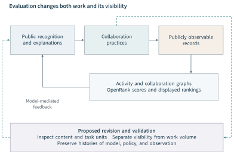

A measure becomes part of an evaluation practice when its data can be renewed, its computation repeated, and its results interpreted by the people whose decisions it is intended to support. These requirements connect the two preceding chapters. Activity defines how recorded behaviours become a measurement. OpenRank defines how relations and prior information enter an allocation of influence or contribution. OpenDigger provides the infrastructure through which these procedures can operate across projects and over time.
The infrastructure also creates a setting in which evaluation can be studied. Running an algorithm on many collaboration networks reveals the cost of preparing those networks, the importance of their size distribution, and the consequences of retaining history. Publishing contribution rankings reveals a different set of consequences: participants may make discussions public, change how they submit patches, or use the ranking to interpret their own work. Such observations bear directly on the theory of evaluation because they change the relationship between the object, its observable representation, and the use of the result.
This chapter develops that connection through three bodies of our work: the OpenDigger framework, the OpenRank computing experiments, and the OpenRank Leaderboard deployment in seven communities (Wang et al., 2026; Han et al., 2026a; Zhao et al., 2024). The doctoral studies supply implementation details and a fuller account of the deployment and its interpretation (Zhao, 2025; Xia, 2024). We first explain the system and its observation boundaries, then examine the computational evidence, and finally follow contribution evaluation into community practice. This completes Part II’s progression from measurement, through relational modelling, to an implemented and empirically examined evaluation process.
6.1 Evaluation Requirements and System Design#
From an evaluation question to a continuing service#
The evaluation question , introduced in Part I, specifies an evaluated object, affected objects and outcome quantities, conditions, a reference, a time horizon, stakeholders, and a purpose. A data platform cannot choose all of these on behalf of its users. It can, however, make some choices explicit and support their consistent implementation. A project comparison needs a declared population and common periods. A contribution analysis needs attributable interactions and a suitable collaboration boundary. A recurring report needs a procedure for distinguishing a new observation from a change in the measurement itself.
OpenDigger was developed to support these connected requirements. Its contribution is the integration of data collection, statistical and network metrics, contextual information, and reusable access services. The same infrastructure supports ecosystem-level influence analysis and project-level contribution analysis, while preserving their different objects and graph constructions. It also permits a researcher to move between an aggregate measure and the records or relations used to construct it.
Earlier research infrastructures establish the importance of this separation of concerns. GHTorrent organized the retrieval and reuse of GitHub data; World of Code supported analyses of version-control objects and relationships across projects; GrimoireLab made collection, enrichment, and visualization reusable across development platforms (Gousios and Spinellis, 2012; Ma et al., 2019; Dueñas et al., 2021). OpenDigger builds on this infrastructural tradition with a particular emphasis on recurring behavioural measurements and collaboration-network evaluation. Its place in this book follows from the evaluation methods it makes operational and the empirical questions it enables.
Five modules with distinct responsibilities#
Figure 6.1 presents the five modules of the latest framework. OpenCrawler and storage acquire and organize platform data. The Metrics module implements statistical measurements together with G-OpenRank and C-OpenRank. The Information Service organizes metric access, labels, datasets, domain knowledge, and visualization support. The Analytics Service Layer makes these resources usable through query interfaces, interactive environments, and exported metric files. Applications combine them into reports, repository insights, contribution recognition, and governance services.

These modules differ from the five evaluation components developed in Section 3.2. Problem definition and the task instance determine which questions should be answered and what would constitute an adequate answer. The algorithmic mechanism comprises the measurement and propagation procedures developed in Chapters 4 and 5. The implementation instance realizes those procedures in queries, graph programs, and services. The supporting system provides the data, labels, software, and computing resources that make execution possible. OpenDigger spans several of these components; its module boundaries are engineering decisions within that larger account.
The distinction is useful in practice. A database schema organizes records; an object causal model represents mechanisms relating objects and their effects. A collection of repositories is an observation product, not a self-contained system in the sense defined in Section 1.2. A comparison also requires compatible objects, periods, and measurement definitions. OpenDigger supplies mechanisms for implementing those requirements; the evaluation design supplies their justification.
Collection and storage as measurement infrastructure#
OpenCrawler separates six responsibilities: HTTP requests, token management, proxy management, large-file downloads, multicore task execution, and scheduled tasks. In the reported GitHub workflow, hourly compressed event archives supply historical activity records, while API requests supply complementary information such as developer profiles. Scheduled imports identify locally missing archive files; download, decompression, validation, and database import are coordinated as recurring jobs. Resumable downloads and concurrent file processing address the engineering cost of repeatedly handling large archives (Wang et al., 2026, Sections 3.2–3.3).
The significance for evaluation lies in the distinction between acquisition and interpretation. Successful import establishes that a file entered the local data process. It does not establish that the platform recorded every relevant contribution, that all historical files were available, or that profiles describe their owners at the time of each event. These remain observation questions. The familiar warnings about inferring software development directly from hosting-platform records therefore apply even to a well-engineered collection system (Kalliamvakou et al., 2014).
OpenDigger uses ClickHouse for columnar aggregation of event records and Neo4j for graph representation and analysis. The split follows two different access patterns. Counting selected behaviours over a period benefits from scanning a subset of event columns; constructing and traversing a collaboration network requires explicit relationships among entities. ClickHouse’s analytical design supports the first pattern (Schulze et al., 2024). The justification for the second comes from the relational models in Chapter 5. Neither storage choice alone determines the validity of a metric, but both affect which measurement tasks can be performed repeatedly at an acceptable cost.
6.2 Data, Labels, and Observation Boundaries#
A dated inventory of what is observed#
Table 6.1 records the data holdings reported for September 2025. Keeping the date is essential: an inventory describes a historical state of the infrastructure. The table combines several kinds of object, including activity records, packages, vulnerabilities, and question-and-answer posts. Its rows therefore describe coverage across domains rather than components of one homogeneous sample.
| Source | Type of record | Reported count |
|---|---|---|
| Cargo | Package records | 121,000 |
| CVE | Vulnerability records | 200,000 |
| NuGet | Package records | 364,000 |
| PyPI | Package records | 449,000 |
| Maven | Package records | 559,000 |
| Go | Module records | 1,020,000 |
| NPM | Package records | 2,470,000 |
| Stack Overflow | Q&A posts | 25,000,000 |
| Gitee | Activity records | 36,337,157 |
| GitHub | Activity records | 9,655,977,166 |
| Associated service inventory | ||
| Statistical metrics | 17 CHAOSS metrics, stars, participants, Activity | 20 |
| Network metrics | G-OpenRank and C-OpenRank | 2 |
| Label integrations | Covering 413 organizations and over 10,000 repositories | 619 |
September 2025 snapshot; data counts reproduced from Wang et al. (2026), Table 1; service inventory from Sections 3.4 and A.1. Units differ across sources and must not be added. The 17 CHAOSS metrics are a subset of the 20 statistical metrics. The reported integrated graph contains approximately 800 million nodes and 1.9 billion edges; this is not the population of monthly benchmark networks.
The integrated collaboration dataset is reported as containing approximately 800 million nodes and 1.9 billion edges. This scale describes a graph representation assembled by the infrastructure. It must be distinguished from the monthly networks used for a particular metric and from the 198,420 networks in the algorithm experiment examined below. Storage scale, analysis population, and experimental sample answer different questions. A claim about one cannot be established by substituting the size of another.
The service inventory makes a similar distinction. The framework reports 20 statistical metrics and two network metrics. Seventeen of the statistical metrics implement CHAOSS definitions; stars, participants, and Activity complete the set. The CHAOSS subset covers participation and absence, issue creation and closure, response and resolution times, code-change volume, and the corresponding change-request measures (Wang et al., 2026, Table 6). G-OpenRank and C-OpenRank add relational evaluation at ecosystem and community levels. Calling all of these metrics does not make their units or evidential roles equivalent: a duration, a count, and a propagated score require different interpretations.
Labels construct the comparison population#
OpenDigger’s labels associate platform identifiers with contextual categories such as initiating company, project, technical field, or foundation. The reported label schema includes an identifier, a name, a type, platform-specific entities, and references to child labels. Set operations then make it possible to select an intersection, union, or difference of labelled populations. For example, intersecting a regional project category with a foundation category defines a more specific collection than either category alone (Wang et al., 2026, Appendix A.1).
This facility turns population construction into an explicit operation. Let denote the entity set associated with label in label version . A comparison population might be
The equation is a formal account of the supported set operations, not a claim that every historical result stored its label version. It shows why the operation and the underlying labels both belong in the evidence for a comparison. Re-running the same intersection after labels change can produce a different population without any change in repository behaviour.
The September 2025 account reports 619 label integrations, covering 413 organizations and more than 10,000 repositories. It lists 144 initiating-company labels, 101 technical-category labels, 344 project labels, and 15 foundation labels. These reported category counts do not sum to the stated integration total. We retain them as reported categories rather than treating them as an exhaustive partition or supplying an unreported remainder. The value of the label service rests on documented membership and meaning, not on interpreting every label as a mutually exclusive class.
Some technical-category assignments in the framework are inferred from repository descriptions, README files, and topics with assistance from a language model, followed by manual inspection. Such a label is an interpreted attribute with an evidential basis. A company label likewise needs to distinguish initiation, present stewardship, and employment affiliation. These relations can overlap or change. A collection labelled by initiating company should not silently become a collection of all current employees’ projects.
Identity, time, and selection remain part of the measure#
Attribution requires a stable account of the measured entity. A developer may use several identities; a repository may change its name or organizational location; an automated account may participate in the same event stream as people. Chapter 4 treats these choices as components of the measurement specification. The infrastructure must carry them into aggregation and graph construction. A name displayed in a result is useful to a reader, but the name alone is insufficient to establish identity continuity.
Time introduces two further distinctions. The time an action occurred differs from the time it was collected. The time a profile or label was observed may differ from both. Assigning a current company profile to all of a developer’s historical actions, for example, makes a retrospective assumption about affiliation. An evaluation can use such an assumption, but should identify it because the resulting historical series answers a different question from one constructed using contemporaneous affiliations.
The online metrics service introduces selection at the point of publication. In the reported design, OpenRank is used to identify repositories and developers for which implemented metrics are computed and exported. This is a useful service strategy, but availability in the exported collection is not equivalent to membership in the entire open source population. An absent file may indicate exclusion from the publication population or lack of an exported result. It should not be converted automatically into a zero score or zero activity.
These boundaries give concrete content to the support layer of Evaluatology. The question is not simply how much data the system holds, but which objects and activities can enter a particular observation. Documenting identifiers, meanings, provenance, and access conditions follows the data-stewardship concerns expressed in the FAIR principles (Wilkinson et al., 2016). Here those concerns become requirements for comparing communities through a shared infrastructure.
6.3 Metric Services and Scalable Computation#
From a query to an interpretable result#
The metric query interface separates analytical functions from the SQL needed to retrieve their inputs. The published interface accepts temporal bounds, entity identifiers or names, labels, sorting and limiting rules, grouping options, precision, and metric-specific options (Wang et al., 2026, Table 8). These parameters are consequential. Sorting by the latest period answers a different question from sorting by the sum over periods. A limit applied to each month yields a changing set of objects; a limit applied to the overall result can retain a fixed selected set. Grouping by organization or technical category changes the unit presented to the reader.
We can express a service result as
where is the data available at extraction time , identifies the metric, its specified version and associated population definition, and contains the remaining query and computation settings. The event interval is distinct from extraction time. This notation extends Chapter 4’s versioned measurement into a service contract: the returned values become interpretable when the inputs and transformations that determine them can be recovered.
Aggregation needs particular care. Counts over disjoint event intervals can often be added, whereas numbers of distinct participants generally require a union of identities. A response-time statistic requires the relevant event pairs and a stated treatment of unresolved cases. Activity has a specified order of weighting, transformation, and aggregation. OpenRank depends on the graph and prior, so summing monthly scores does not generally reproduce a score calculated on an annual graph. The presence of an annual grouping option is therefore not a mathematical guarantee that every metric aggregates in the same way.
This issue is especially visible when the service is used to compare projects. A ranking by a rounded value can introduce ties absent at full precision. A top-ten query can conceal changes below its cutoff. A sum across labels can double-count repositories belonging to more than one category. These are properties of the requested result, not defects peculiar to one database. The interface makes such operations convenient; the evaluation task determines which of them is appropriate.
Three access routes for different analytical tasks#
OpenDigger provides interactive Node.js and Python notebooks, a command-line interface, and publicly accessible metric files. Notebooks support exploratory analysis and visualization with access to the relevant services. The command-line interface supports querying, filtering, grouping, and basic analytical operations. Exported metric files lower the access cost for applications and researchers who need prepared results rather than direct access to the underlying databases (Wang et al., 2026, Appendix A.5).
The exported service computes results on a recurring monthly schedule and supplies monthly, quarterly, and annual forms. This arrangement separates the cost of computation from the cost of reading a result. A dashboard can retrieve a prepared series without reconstructing a collaboration network on every request. The tradeoff is that a published series has a production date, a selected population, and an update policy. Those properties belong alongside the values when the series is used as research evidence.
For this monograph, a reusable evaluation result should therefore be accompanied by a compact record of its metric version, population, observation interval, extraction date, parameter settings, and relevant software identity. This is a proposed documentation requirement, not an assertion that all existing endpoints already expose that record. It makes reproducibility operational without requiring every consumer to repeat the full acquisition process. Recording the transformations and versions that lead to a result is also central to reproducible computational research (Sandve et al., 2013).
The algorithm and the execution path#
For the fixed graph and prior of one measurement window, Chapter 5 expresses OpenRank as
Here contains structural-dependence coefficients and is the fixed prior. A direct linear-algebra method and a graph-iteration method can target the same equation, provided that they use the same normalization, coefficients, prior, treatment of missing links, and stopping criterion. That agreement must be checked before a runtime comparison is interpreted as a comparison of implementations of one model.
The graph implementation follows a vertex-oriented computation: each node aggregates incoming messages, combines them with retained prior information, and distributes the result through weighted outgoing relations. Pregel provides the established computational pattern of iterative vertex programs and message exchange (Malewicz et al., 2010). OpenRank’s use of that pattern connects a mathematical recurrence to a practical graph engine. It does not require the empirical collaboration graph to be a model of literal information transmission.
The distinction between dense and sparse operations matters. A dense direct solution can have cubic time and quadratic storage costs. One sparse iteration instead visits the represented nodes and edges, with cost proportional to , before accounting for runtime overhead and the number of iterations. A dense matrix–vector product is quadratic, not cubic. Consequently the experiment below concerns the particular direct matrix-algebra implementation and graph implementation used in the study; it is not evidence that every matrix-based method is intrinsically slower than a graph engine.
A practical execution time also includes preparing and transporting data:
These terms define an accounting framework rather than a decomposition fitted to new measurements. They explain why a method with favourable iterative complexity may lose on small graphs: fixed preparation overhead can dominate the solve. They also explain the value of selecting an execution path by network size. The doctoral implementation describes a pool of 12 matrix-algebra workers and four Neo4j graph-computation threads, with dispatch informed by the observed crossover (Zhao, 2025, Section 4.3.2). This is a reported scheduling configuration, not a separately measured speedup or a claim that thread counts equal physical cores.
6.4 Validation of the Evaluation Infrastructure#
Capability coverage and its evidential limits#
The OpenDigger study compares insight tools and collection tools separately. Tables 6.2 and 6.3 preserve this distinction. The first records the source paper’s classification of metric families, data sources, and intended uses. The second records collection functions such as scheduling, error handling, and token management. Together they locate the integrated design; they do not constitute a controlled benchmark of all the listed systems.
| Tool | Stat. | Net. | Source data | Emphasis |
|---|---|---|---|---|
| OpenDigger | 20 | 2 | GitHub, Gitee, NPM, PyPI, CVE, security, and more | Network metrics; continuous collection across platforms |
| OSSInsight | 20 | 0 | GitHub | Real-time trends; dashboards and SQL |
| OSS Compass | 20+ | 0 | GitHub, Gitee | Community health and governance; LF APAC |
| GrimoireLab | 30–50 | 0 | GitHub, GitLab, Gerrit, mailing lists, Jira, and more | Extensible OSPO analytics |
| World of Code | 0 | 0 | GitHub | Global dependency research |
| Augur | 30 | 0 | GitHub, GitLab, mailing lists, Slack, Discourse, etc. | CHAOSS; community health and risk |
Adapted from Wang et al. (2026), Table 2; counts and platform lists retain the source snapshot. Stat. and Net. denote the papers categories of statistical and network metrics. A zero means no item was counted in that category by that comparison. It does not imply absence of analytic or network-research capability. These are reported classifications, not results of a new feature audit.
| Tool | DCP | DF | IPS | RRC | EH | MTH | ST |
|---|---|---|---|---|---|---|---|
| Scrapy | — | ||||||
| BeautifulSoup | — | — | — | — | |||
| Selenium | — | — | — | ||||
| Puppeteer | — | — | — | ||||
| Octoparse | — | — | — | ||||
| ParseHub | — | — | — | ||||
| OpenCrawler |
Marks reproduce Wang et al. (2026), Table 3: = marked in the source; — = unmarked in the source. DCP: data cleaning and parsing; DF: data format; IPS: IP proxy support; RRC: request rate control; EH: error handling; MTH: multiple-token handling; ST: scheduling tasks. This comparison records functions, not correctness, throughput, completeness, or current product capability.
For example, World of Code supports research on relationships across the open source software universe even though the OpenDigger comparison assigns zero entries to its two metric-count categories. Its primary research account makes that broader purpose clear (Ma et al., 2019). Similarly, a collection framework can be extended by its users beyond the functions counted in a comparison. Keeping the original classification while stating what was counted avoids turning a study-specific table into a universal judgment about another infrastructure.
The collection comparison supports a narrower, useful claim: OpenCrawler combines the listed functions within the workflow examined by the authors. Establishing record completeness, duplicate handling, recovery after interrupted imports, or sustained query latency would require different evidence. The distinction between capability coverage and measured performance is part of the evaluation design, not a qualification to be added only after a result is obtained.
Population and computing conditions#
The OpenRank algorithm study reports 198,420 repository-associated collaboration networks for January 2024 and groups them by , where is node count. Table 6.4 retains all eight size bins and the total row. Small graphs dominate the population; the largest bin contains only six cases. An average over all networks and a conclusion about the largest networks therefore describe substantially different parts of the workload.
| Networks | Mean nodes | Mean edges | Density | Mean degree | |
|---|---|---|---|---|---|
| 1 | 59,376 | 6 | 4 | 0.1229 | 1.59 |
| 2 | 81,304 | 12 | 13 | 0.0797 | 2.04 |
| 3 | 40,573 | 32 | 41 | 0.0397 | 2.49 |
| 4 | 13,437 | 84 | 114 | 0.0173 | 2.73 |
| 5 | 2,982 | 223 | 317 | 0.0068 | 2.83 |
| 6 | 642 | 619 | 931 | 0.0026 | 2.98 |
| 7 | 100 | 1,641 | 2,326 | 0.0009 | 2.84 |
| 8 | 6 | 3,568 | 4,019 | 0.0003 | 2.26 |
| Total | 198,420 | 25 | 32 | 0.0788 | 2.06 |
All eight bins and the total row are reproduced from Han et al. (2026a), Table 4. Means and densities retain the source rounding. The reported total density is not a density calculated from the rounded mean node and edge counts. The latest paper specifies an eligibility threshold of at least two nodes; no separate two-node bin appears in its table.
The latest paper specifies an eligibility threshold of at least two nodes. Its published table begins at , and does not separately report a two-node bin. We retain the stated threshold and the reported population instead of inferring an unreported count. The table’s rounded means also cannot recover the exact size of every graph or replace the original networks in a replication.
The associated doctoral account specifies an eight-core Intel i9 at 2.4 GHz, 64 GB of memory, Neo4j Community 5.10.0, Graph Data Science 2.4.2, and OpenRank Pregel 2.4.2. It reports four graph-computation threads, a maximum of 50 iterations, and a local loopback connection between the calling program and the database (Zhao, 2025, Section 4.3.2). These details describe the reported experimental environment; they are not current software recommendations. They also provide the context needed to interpret the absolute timing figures.
The algorithm paper states that basic node, edge, and weight data were preprocessed and loaded into memory for both methods. The graph path additionally loaded the data into Neo4j to construct a temporary graph. Thus the experiment includes a preparation cost specific to that path. A deployment with persistent graph projections, different hardware, or a different concurrency policy could move the crossover even if the target equation remained unchanged.
What the timing experiment establishes#
Figure 6.2 preserves the original timing plot. The reported graph implementation takes an average of 4.2 seconds per graph: approximately 311 milliseconds are spent in the core computation and about 3.9 seconds in graph preparation. These are rounded components of the reported total. Their relative size explains the nearly flat graph-method curve over the studied range and the disadvantage of that path for small inputs (Han et al., 2026a, Section 4.5).

In the same environment, the two methods reach comparable average time at about 146 nodes. The source therefore proposes a practical boundary near 150 nodes, with direct matrix algebra for smaller networks and graph iteration for larger ones. At about 3,900 nodes, the reported matrix-algebra time reaches 4.2 hours. The engineering lesson is to match the method to the workload distribution and include preparation in the comparison. The number 150 is an empirical dispatch setting under these conditions, rather than a property of OpenRank’s mathematics.
The population table strengthens this interpretation. A service processing many small communities can benefit from a low-overhead path even if its most demanding cases require graph iteration. Conversely, an aggregate average dominated by small graphs can conceal the costs of the tail. A convincing infrastructure evaluation therefore needs both the distribution of inputs and the behaviour of the implementation across that distribution. The source experiment supplies both, while leaving hardware portability and alternative sparse solvers as further empirical questions.
History, convergence, and the target of computation#
The convergence experiment introduces temporal information. Scores are computed monthly from January 2015, with each subsequent month inheriting 15% of the preceding month’s OpenRank value; newly appearing nodes are initialized to one. For the January 2024 experiment, the relevant preceding values come from December 2023 (Han et al., 2026a, Section 4.4). This is the recipe for that benchmark, and should not be substituted for every prior policy used by G-OpenRank or C-OpenRank.

| Repository | Nodes | Edges | Iterations |
|---|---|---|---|
| langchain-ai/langchain | 3,134 | 8,576 | 21 |
| ZeroK-RTS/CrashReports | 3,338 | 6,672 | 24 |
| mergifyio-testing/functional-testing-repo-Greesb | 3,659 | 8,182 | 24 |
| godotengine/godot | 3,663 | 9,842 | 21 |
| zed-industries/zed | 3,704 | 6,600 | 24 |
| digitalinnovationone/dio-lab-open-source | 3,908 | 8,354 | 21 |
Reproduced from Han et al. (2026a), Table 5. The mean for all six cases is 22.5 iterations; the three cases that the paper identifies as retaining historical continuity each require 21 iterations. Repository identifiers, counts, and iterations are preserved.
Figure 6.3 reports fewer iterations for the tested OpenRank configuration than for the tested PageRank configuration across the displayed bins. Table 6.5 gives the six largest cases. Their mean is 22.5 iterations. The three cases identified in the paper as retaining historical continuity each take 21 iterations; the paper reports a 14.88% reduction relative to PageRank for this subset. The subset mean and the all-case mean must remain distinct.
Chapter 5 supplies the mathematical interpretation needed here. A previous result used as the numerical starting point can reduce the distance to an unchanged fixed point. A previous result used in the fixed prior can instead change the fixed point itself. The published history-based configuration may embody the latter modelling choice as well as an initialization advantage. Its results demonstrate the behaviour of the tested configurations. A pure solver-acceleration experiment would additionally hold the target equation fixed and compare starting points using a common residual tolerance.
These experiments bring implementation constraints back into evaluation theory. Network size and sparsity affect the feasible procedure; temporal history affects both continuity of interpretation and potentially the target being computed. Computability is therefore part of task adequacy. It remains distinct from whether the computed score represents the desired attribute, and from whether publishing it benefits the community.
6.5 Deploying Contribution Recognition#
From a contribution score to a community arrangement#
OpenRank Leaderboard places the community contribution model in a visible social setting. The seven projects in Table 6.6 were mature communities with company support and, on average, two to three committed full-time Alibaba employees. The deployment therefore examines a particular organizational setting: established projects with maintainers able to introduce and explain a shared recognition mechanism (Zhao et al., 2024, Section 3.1).
| Repository | Participants | Stars | Created |
|---|---|---|---|
| alibaba/ice | 207 | 17.5k | 2016.11 |
| alibaba/spring-cloud-alibaba | 410 | 25.5k | 2017.12 |
| alibaba/DataX | 409 | 13.4k | 2018.01 |
| alibaba/easyexcel | 748 | 27.7k | 2018.02 |
| seata/seata | 521 | 23.7k | 2018.12 |
| openyurtio/openyurt | 111 | 1.5k | 2020.05 |
| fluid-cloudnative/fluid | 154 | 1.3k | 2020.07 |
Reproduced from Zhao et al. (2024), Table 1. Participants are the studys preceding-year community counts; stars and creation dates retain that historical profile. Fluid was co-initiated by Nanjing University and Alibaba. These are seven mature, company-supported communities, not a random sample of open source projects.
The published leaderboard is updated monthly. It displays contributor identities and avatars, OpenRank contribution scores, changes from the preceding month, and labels identifying newcomers and bots. Maintainers were asked to circulate weekly reports through community channels; repository README badges linked to the leaderboard; network visualizations and calculation details connected scores to issues and pull requests. Explanations on the homepage described the algorithm. The study reports an average of 879 monthly page views after launch, without extensive promotion through external media.
The intervention is consequently more than the ranking function. It combines measurement, public comparison, explanation, and repeated communication. A developer encounters the score through a community arrangement, and the arrangement affects which actions appear worthwhile or visible. This is consistent with research treating open source motivation as embedded in social practice (von Krogh et al., 2012). The gamification literature likewise makes context and users central to interpreting an intervention’s effects (Hamari et al., 2014). Here the empirical contribution is to examine such an arrangement around a collaboration-network measure.
The latest doctoral account also describes accumulated contribution points connected to tangible rewards, including community merchandise and other items (Zhao, 2025, Section 6.2). This extends the design beyond the arrangement documented in the 2024 paper, where combining the leaderboard with a reward system appears as a development direction. We therefore distinguish the evolving mechanism from the dated evidence. The supplied accounts do not establish precisely when each reward component was introduced. The quantitative results below cannot identify a separate reward effect, or be reassigned retrospectively to an intervention version whose timing is unspecified.
The observation window and analysis#
The quantitative study uses six monthly observations before launch and six afterwards for each project and metric. The pre-launch period is April–September 2022; launch occurs in October 2022; the post-launch period is October 2022–March 2023. The paper’s endpoint of 1 April 2023 closes that final six-month interval. A screenshot from April 2023 illustrates the interface, but does not create a thirteenth monthly observation in the reported analysis.
Eight outcomes cover issues, change requests, reactions, and community size. For the study’s new-contributor outcome, the paper refers to developers whose new pull requests have been merged. Participants covers developers involved in project collaboration. These definitions matter: the two variables are not interchangeable measures of recruitment, and neither alone describes retention or the value of contributions.
The paper describes its analysis as regression discontinuity design and reports the model
Here indexes months from the start of observation, indicates the post-launch period, and is zero before launch and increases with months afterwards. The control series records contemporaneous collaboration events across Chinese company-led projects collected and labelled in OpenDigger. It is intended to account for common temporal variation, including academic holidays and Chinese New Year. The intercept notation here is unrelated to the structural-dependence coefficients in Equation 6.3.
This is a segmented model with a time cutoff: describes a level change under the chosen coding, and a slope change. Its interpretation therefore benefits from the interrupted-time-series literature, which emphasizes the impact model, autocorrelation, seasonality, and concurrent events (Lopez Bernal et al., 2017). The local-comparability argument of conventional regression discontinuity also requires care when calendar time determines exposure and other conditions may change at the same date (Lee and Lemieux, 2010). Merely naming the method does not establish that those conditions hold.
The source gives the equation and aggregate results but does not provide enough detail in the supplied report to reconstruct every modelling decision, including the complete design matrix, project aggregation, and error specification. The first post-launch value assigned to also matters for interpreting a coefficient labelled as a level change. We preserve the reported coefficients and the authors’ labels rather than supplying unreported standard errors, confidence intervals, or a new fitted model. Twelve monthly observations per project are not 84 independent replications of the intervention.
Reported changes and their interpretation#
Table 6.7 reproduces the full published numerical result, including the negative mean change in participants and the original significance symbols. Figure 6.4 retains all four source panels, including the control series. Reading them together separates the outcomes, their temporal patterns, and the different summaries used in the paper.
| Metric | Level | Slope | Mean change | |
|---|---|---|---|---|
| Issues New | 0.83 | |||
| Issue Comments | 0.98 | |||
| Change Requests New | 0.83 | |||
| Change Requests Accepted | 0.83 | |||
| Change Requests Reviews | 0.87 | |||
| Reactions | 0.90 | |||
| New Contributors | 0.66 | |||
| Participants | 0.92 |
All 32 numerical entries and 16 significance marks reproduce Zhao et al. (2024), Table 6. Source notation is retained: : ; : ; : . Level and slope are regression coefficients on the outcome scale; mean change is a separate descriptive percentage. Change requests are pull requests on GitHub. The estimates summarize the published analysis and have not been re-estimated for this book.




Issue comments show a reported slope change of 255.66 and a mean increase of 52.75%. The slope is a change in outcome units per month under the fitted model; it is not a 255-fold increase. New change requests show a slope change of 32.32 and a mean increase of 67.87%. The coefficient 32.32 is likewise not itself a percentage. Reactions have significant reported changes in both level and slope and a mean increase of 118.18%. These patterns concern visible collaborative actions, which is consistent with the behaviours discussed by interviewees.
The outcomes do not move uniformly. Accepted change requests and reviews have positive descriptive mean changes, while their reported slope coefficients carry the paper’s non-significance mark. Participants has a positive reported level coefficient but a mean change of . These quantities need not have the same sign because they summarize different comparisons: one is a model coefficient conditional on the other regressors; the other compares period means. Suppressing the negative entry would obscure a central feature of the study: increased recorded interaction does not imply expansion of the participant population.
Several collaboration measures changed during the deployment period within these communities. It also supports examining mechanisms through which public recognition changes practices. The design does not isolate the ranking formula from communication, explanations, concurrent project events, or any subsequently introduced rewards. The common control series addresses one source of temporal variation, but does not remove every project-specific change or guarantee an untreated counterfactual. Software quality, sustained retention, and effects in other governance settings remain separate evaluation questions.
6.6 Behavioural Feedback and Model Revision#
What participants reported#
The qualitative study interviewed 18 people: seven maintainers and 11 external contributors. All seven maintainers were Alibaba employees. Among the external contributors, three were students, seven were employees, and one was a freelancer; seven appeared in the top ten of their project leaderboard and four did not. Interviews were conducted in Chinese, lasted approximately 30–45 minutes, and were transcribed. The first two authors coded the material independently, discussed disagreements, and checked interpretations with the interviewees (Zhao et al., 2024, Section 4.2).
Thematic analysis provides a method for relating recurring accounts to the questions being investigated (Braun and Clarke, 2006). It does not make a purposively selected interview sample representative of all contributors. Table 6.8 preserves the 14 themes and frequencies consolidated in the doctoral accounts. A person can contribute to several themes, and the same empirical study appears in the paper and both theses. These are complementary descriptions of one evidence base.
| Theme | Mentions |
|---|---|
| Communication | |
| Move discussion from private channels into public records | 13 |
| Use thumbs-up reactions for appreciation or acknowledgement | 9 |
| Seek collaboration with contributors with higher OpenRank | 3 |
| Use scores as supporting information when assigning issues | 2 |
| Edit or consolidate comments instead of adding actions | 1 |
| Development | |
| Split large changes into smaller, independent pull requests | 8 |
| Use pull requests in place of direct commits | 5 |
| Wait for others to review or merge changes | 3 |
| Submit small fixes or dependency updates | 3 |
| Perception | |
| Endorse contribution evaluation through collaboration networks | 11 |
| Use the leaderboard for self-assessment and collaboration | 8 |
| Perceive algorithmic complexity as raising the cost of gaming | 4 |
| Suggest incorporating the value of contribution content | 2 |
| View content-agnostic evaluation as encouraging newcomers | 1 |
Fourteen themes and their frequencies translated and consolidated from Zhao (2025), Table 6.7 and Xia (2024), Table 6.7, corresponding to the same interview study reported in Zhao et al. (2024), Section 4.2. The sample comprises 18 interviewees; themes overlap. Counts are mentions within this selected sample, not prevalence estimates for project populations. The theses and paper are overlapping accounts, not independent replications.
The most frequently reported communication change is a movement from private exchanges to public records, mentioned by 13 interviewees. Nine describe reactions as appreciation or acknowledgement. These accounts suggest two connected mechanisms: evaluation can make existing work more visible, and it can encourage social signals that were previously uncommon. A public discussion can also become a durable resource for later contributors, giving it a practical value beyond its immediate effect on a score.
Development practices show a similarly mixed relationship to recorded volume. Eight interviewees report splitting large changes into smaller, independent pull requests; five describe using pull requests instead of direct commits; three describe waiting for another participant to review or merge a change. These practices can make collaboration more inspectable. They can also increase the number of recorded units without a proportional increase in the amount of underlying technical work. The interpretation therefore depends on what the task values: reviewable changes, independent contributions, coordination, or some combination.
The accounts are not uniformly oriented toward maximizing rank. Eight interviewees describe the leaderboard as a channel for self-assessment and collaboration, while one established contributor reports editing or consolidating comments instead of adding more actions. Two maintainers describe using scores as additional information when assigning issues. These observations suggest that a contribution measure can function as an interpretive aid within existing norms, rather than solely as a competitive target. They also show why a final judgment should remain connected to the work and its context.
A change in work, a change in visibility, or both#
Figure 6.5 draws out the relationship between these practices and the measurement process. The diagram is a theoretical interpretation of the evidence, not an estimated causal graph. It links public recognition to collaboration practices, observable records, and the next round of metric construction. The proposed revision path asks whether a changed result reflects a changed attribute, a changed observation process, or both.

Write the observable record for period as
where denotes the work and interactions of interest, the observation conditions, and the process through which that work becomes recorded. The measurement has a declared version. Publishing can affect later work and the process that makes it visible. This equation is a conceptual decomposition; the study does not observe all of its components independently.
Moving a discussion from a private channel to a public issue changes , even if the substance of the discussion is unchanged. Using a reviewed pull request instead of a direct commit can change both the workflow and its recorded representation. Splitting a patch changes the unit counted by a pull-request metric. Reactions can express appreciation and, under the community model, modify the weight attached to a collaboration unit. The feedback is therefore specific to the measurement design, not simply a generic response to being ranked.
This interpretation connects the deployment to Part Is account of evaluation and observation. The contribution model represents selected actions and relations; an object causal model would additionally specify the mechanisms through which the arrangement affects collaboration. When recognition changes how actions are produced and recorded, both the measurement interpretation and the proposed mechanisms need examination. A longer time series provides more observations under that potentially changed process.
Revisions supported by the evidence#
The evidence motivates three directions for model development. First, preserve the distinction between work and recorded units. A higher pull-request count should be interpreted alongside the size, independence, review, and outcome of the changes. The interviews support the relevance of these questions, but do not establish that a particular content-scoring model solves them. Incorporating content value would require its own definition, measurement procedure, and validation against the intended contribution task.
Second, make the path from action to recognition intelligible. The deployed network visualizations and calculation explanations already connect a score to collaboration units. The two interviewees who requested content-sensitive evaluation identify an attribute that this representation may omit. The participant who saw content-agnostic evaluation as encouraging newcomers identifies a potentially different objective. Refining the model therefore involves a choice about purpose and stakeholders, rather than merely adding a more complex feature.
Third, evaluate behavioural adaptation directly. Four interviewees perceived the algorithm’s complexity as making score manipulation more difficult. That is evidence about their perception, not a demonstration of resistance to coordinated or adversarial behaviour. A suitable follow-up would distinguish beneficial adaptation, such as improved review practices, from low-value fragmentation or reciprocal signalling. It would compare the resulting work with the community’s declared objectives, rather than defining success only by a rise in the measure being promoted.
These directions also shape future deployment studies. The version of the algorithm, the display and communication policy, and the introduction of points or rewards should have separate dated records. Outcome definitions should include the kinds of change the community values, alongside possible burdens or displacement of unmeasured work. Longer observation, explicit comparison conditions, and qualitative follow-up would help determine whether a response persists and whether it transfers beyond mature company-supported projects. These are extensions proposed by the present synthesis; they are not additional experiments claimed for the original deployment.
What practice contributes to Open Source Evaluatology#
OpenDigger supplies more than a container for the preceding methods. Its data and label services show how an observation boundary can be made operational. The computing experiments show that population structure, preparation cost, and temporal information influence the feasible implementation of an evaluation. The leaderboard study shows that a result can become part of the collaboration process it describes. Together these findings give practical content to the relationship between theoretical specification and empirical revision.
Three distinctions should therefore remain visible in a continuing evaluation: the attribute sought and the records available; the model’s target and the procedure used to compute it; and the result produced and the community arrangement in which it is used. Chapters 4–6 have supplied a measurement, a relational method, and an infrastructure with deployment evidence for examining these distinctions. The next part of the book can now ask how the resulting evaluation practices transfer across purposes and settings, and how their use should be governed when those conditions differ.
References#
Braun, V., and Clarke, V. (2006). Using thematic analysis in psychology. Qualitative Research in Psychology, 3(2), 77–101. DOI: 10.1191/1478088706qp063oa.
Dueñas, S., Cosentino, V., Gonzalez-Barahona, J. M., del Castillo San Felix, A., Izquierdo-Cortazar, D., Cañas-Díaz, L., and Pérez García-Plaza, A. (2021). GrimoireLab: A toolset for software development analytics. PeerJ Computer Science, 7, e601. DOI: 10.7717/peerj-cs.601.
Gousios, G., and Spinellis, D. (2012). GHTorrent: GitHub’s data from a firehose. In Proceedings of the 9th IEEE Working Conference on Mining Software Repositories, pp. 12–21. DOI: 10.1109/MSR.2012.6224294.
Hamari, J., Koivisto, J., and Sarsa, H. (2014). Does gamification work?—A literature review of empirical studies on gamification. In Proceedings of the 47th Hawaii International Conference on System Sciences, pp. 3025–3034. IEEE. DOI: 10.1109/HICSS.2014.377.
Han, F., Zhao, S., Wang, W., Peng, J., and Xia, X. (2026a). OpenRank: A centrality algorithm for high-dimensional heterogeneous networks in open source collaboration. Information Sciences, 730, 122893. DOI: 10.1016/j.ins.2025.122893.
Kalliamvakou, E., Gousios, G., Blincoe, K., Singer, L., German, D. M., and Damian, D. (2014). The promises and perils of mining GitHub. In Proceedings of the 11th Working Conference on Mining Software Repositories, pp. 92–101. ACM. DOI: 10.1145/2597073.2597074.
Lee, D. S., and Lemieux, T. (2010). Regression discontinuity designs in economics. Journal of Economic Literature, 48(2), 281–355. DOI: 10.1257/jel.48.2.281.
Lopez Bernal, J., Cummins, S., and Gasparrini, A. (2017). Interrupted time series regression for the evaluation of public health interventions: A tutorial. International Journal of Epidemiology, 46(1), 348–355. DOI: 10.1093/ije/dyw098.
Ma, Y., Bogart, C., Amreen, S., Zaretzki, R., and Mockus, A. (2019). World of Code: An infrastructure for mining the universe of open source VCS data. In Proceedings of the 16th IEEE/ACM International Conference on Mining Software Repositories, pp. 143–154. DOI: 10.1109/MSR.2019.00031.
Malewicz, G., Austern, M. H., Bik, A. J. C., Dehnert, J. C., Horn, I., Leiser, N., and Czajkowski, G. (2010). Pregel: A system for large-scale graph processing. In Proceedings of the 2010 ACM SIGMOD International Conference on Management of Data, pp. 135–146. ACM. DOI: 10.1145/1807167.1807184.
Sandve, G. K., Nekrutenko, A., Taylor, J., and Hovig, E. (2013). Ten simple rules for reproducible computational research. PLoS Computational Biology, 9(10), e1003285. DOI: 10.1371/journal.pcbi.1003285.
Schulze, R., Schreiber, T., Yatsishin, I., Dahimene, R., and Milovidov, A. (2024). ClickHouse—Lightning fast analytics for everyone. Proceedings of the VLDB Endowment, 17(12), 3731–3744. DOI: 10.14778/3685800.3685802.
von Krogh, G., Haefliger, S., Spaeth, S., and Wallin, M. W. (2012). Carrots and rainbows: Motivation and social practice in open source software development. MIS Quarterly, 36(2), 649–676. https://aisel.aisnet.org/misq/vol36/iss2/16/.
Wang, W., Han, F., Zhao, S., Zhou, X., Qian, W., Zhou, A., Xia, X., Yang, L., Wang, R., Jiang, N., and Duan, M. (2026). OpenDigger: A practical framework for assessing community health and sustainability in open source collaboration platforms. In Proceedings of the ACM Web Conference 2026, pp. 7745–7756. ACM. DOI: 10.1145/3774904.3792807.
Wilkinson, M. D., Dumontier, M., Aalbersberg, I. J., et al. (2016). The FAIR Guiding Principles for scientific data management and stewardship. Scientific Data, 3, 160018. DOI: 10.1038/sdata.2016.18.
Xia, X. (2024). Data-Driven Empirical Research on the Key Elements of Sustainability in Open Source Software Communities. Doctoral dissertation, East China Normal University, March 2024. In Chinese; English title supplied by the dissertation.
Zhao, S., Xia, X., Fitzgerald, B., Li, X., Lenarduzzi, V., Taibi, D., Wang, R., Wang, W., and Tian, C. (2024). OpenRank Leaderboard: Motivating open source collaborations through social network evaluation in Alibaba. In Proceedings of the 46th International Conference on Software Engineering: Software Engineering in Practice, pp. 346–357. ACM. DOI: 10.1145/3639477.3639734.
Zhao, S. (2025). Research and Application of Key Technologies for Open Source Ecosystem Data Platform. Doctoral dissertation, Tongji University, September 2025. In Chinese; English title supplied by the dissertation.